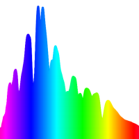
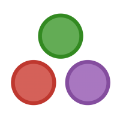
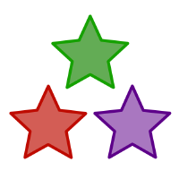
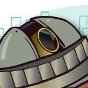

Software projects
All my code is open-source (BSD- or MIT-licensed where possible) and available on GitHub. For the most part, these are astronomy-related libraries, though there are a couple more general statistics or signal processing libraries.

Python & C
I maintain four Python packages on the Python package index and have contributed to several others. A couple packages are mainly written in C and these have C APIs.

SNCosmo
SNCosmo is a Python package for supernova cosmology data analysis and simulation. I'm the creator and main developer. SNCosmo on GitHub.
SEP
SEP is a Python and C library for source detection and photometry, adapted from the Source Extractor code base. I created it in order to make the Source Extractor background and detection algorithms available directly from Python. SEP on GitHub.
Nestle
(Rhymes with "wrestle".) An open-source (MIT-licensed) pure-Python implementation of nested sampling algorithms, similar to those in the MultiNest software. Nestle on Github.
Extinction
Fast (Cython-based) implementation of interstellar dust extinction laws for Python. Extinction on Github.
AstroPy
AstroPy is a community-developed Python library for astronomy. In the core package, I designed the logo and the layout and style for the documentation and contributed several functions in the stats module. I wrote the initial code for the PhotUtils affiliated package for photometry. AstroPy on GitHub.

Julia
I maintain about six registered Julia packages on the Julia package index.

Julia Astro
Collection of astronomy packages for the Julia programming language. I wrote the bulk of the FITSIO.jl package for FITS file format I/O and also contributed the DustExtinction.jl package for simple extinction laws. I also maintain the WCS.jl and Cosmology.jl packages. Julia Astro on GitHub.
Dierckx.jl
Dierckx.jl is a package for 1-d and 2-d splines in Julia. It's a wrapper of the dierckx Fortran library available from NETLIB, the same library underlying the spline classes in scipy.interpolate.
SkyCoords.jl
Simple and fast astronomical coordinate system transformations in Julia. Transforms between ICRS, galactic, and FK5 (e.g., J2000) coordinate systems.

Nearby Supernova Factory
I release open-source code for the cosmology experiment that I work on, the Nearby Supernova Factory under the group's GitHub organization at http://github.com/snfactory. In addition to the code I've written for the project, I'm working on open-sourcing legacy components of the group's data processing pipeline to enable reproducibility and code reuse.
cubefit
Simultaneous fit of a supernova spectral time series and galaxy model on multiple spectral data cubes. Uses some FFT tricks for a fast analytical calculation of the gradient of the objective function, allowing us to efficiently optimize a model with over a million parameters (with regularization). The code is particular to SNFactory data, but open-source for anyone to inspect and adapt for their needs.